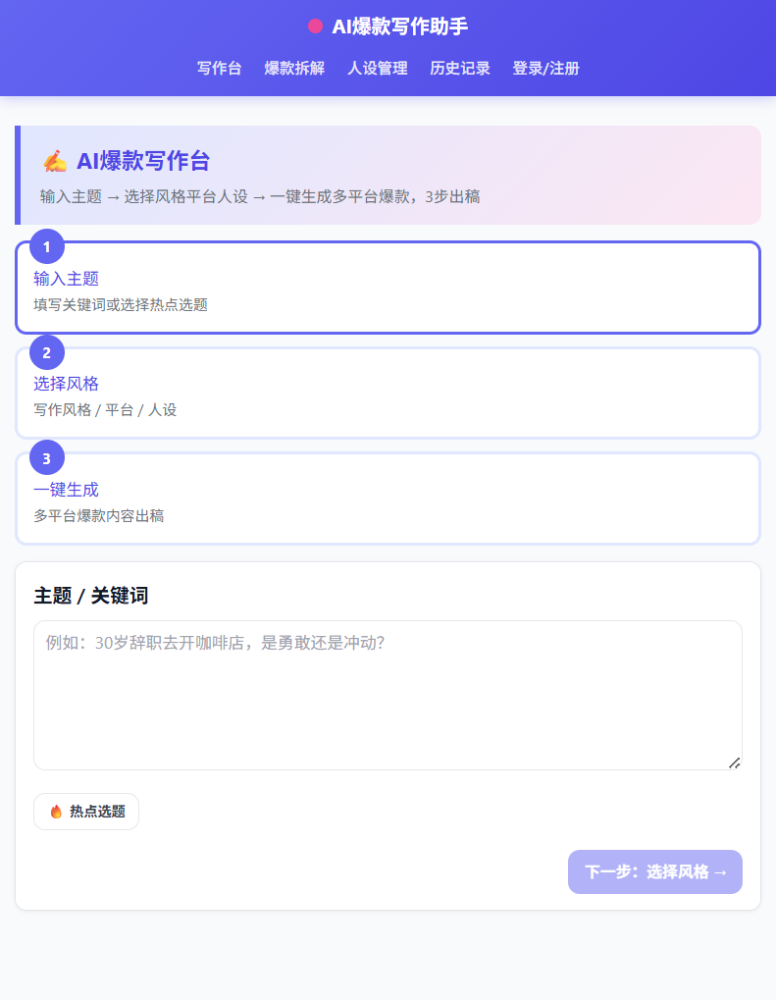
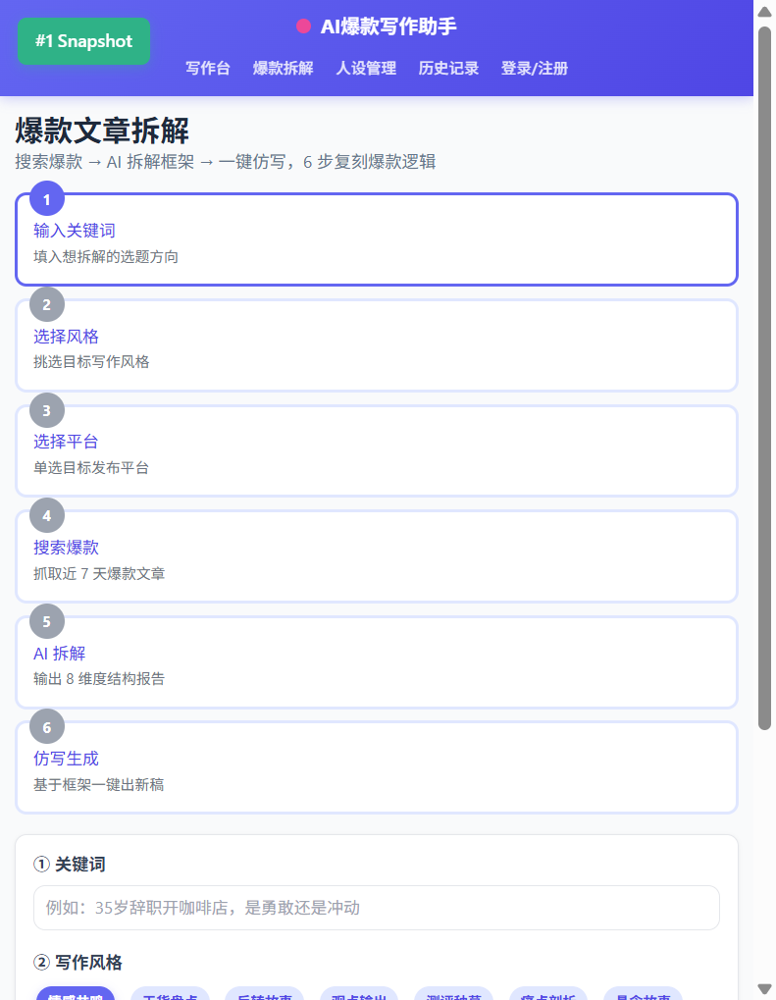
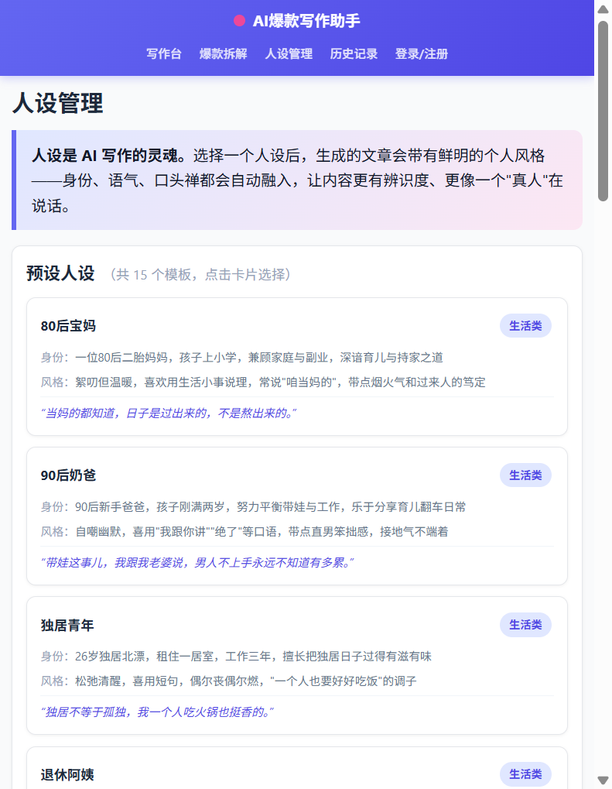
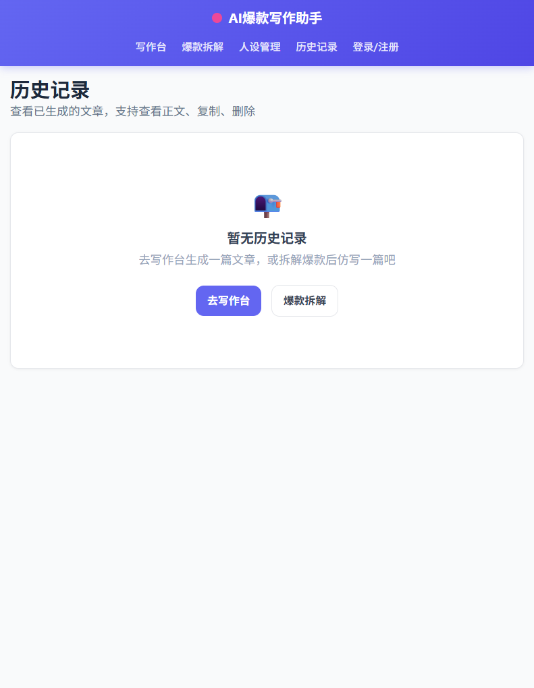

✍️ AI爆款写作助手
输入选题 → 选择风格平台人设 → 一键生成多平台爆款内容，3步出稿
支持头条号、小红书、知乎、公众号、百家号五大平台深度适配
🔥 5平台深度适配
📝 15种写作风格
🎭 15个预设人设
🤖 通义千问驱动
✨ 去AI化生成
1
产品界面展示
以下是产品各个核心页面的实际界面截图，点击可查看大图

核心页面
AI爆款写作台
选题输入、热点推荐、3步出稿流程指引，支持关键词输入或一键选取热点选题

用户系统
登录 / 注册
手机号注册登录，JWT认证，每日免费生成额度，Tab切换登录/注册模式

特色功能
爆款文章拆解
6步流程：搜索爆款→AI拆解框架→一键仿写，8维度结构化分析报告

人设系统
人设管理
15个预设人设模板（生活/职场/兴趣/知识类），支持创建自定义人设

内容管理
历史记录
查看所有生成记录，支持按平台筛选、查看正文、一键复制、删除管理
2
核心功能
三大核心引擎驱动，从选题到出稿全链路覆盖
🚀
5平台爆款内容一键生成
不是简单的同一篇文章换标题，而是从头到尾独立生成——每个平台有独特的开头策略、语言风格、段落节奏和结尾CTA。
- 头条号：短段落+数字开头+"评论区聊聊"
- 小红书：emoji+"姐妹们"+"点赞收藏⭐"
- 知乎："先说结论"+加粗重点+"点个赞同"
- 公众号：情感故事+"点个在看"
- 百家号："一二三"小标题+"关注获取"
🔍
爆款文章8维度拆解引擎
粘贴任意爆款文章，AI从8个维度进行结构化拆解分析，拆解完成后可基于报告仿写新选题。
- 标题分析：类型/钩子/点击率预估
- 开头策略：前100字如何抓注意力
- 结构骨架：全文分段逻辑拆解
- 情绪曲线：情绪起伏节点与峰值
- 金句提取 + 互动设计 + 人设推断
- 爆款因子：可复制的爆款要素清单
✨
去AI化深度优化
内置11条去AI化指令，从语言层到内容层全面规避AI腔，配合temperature 0.95高随机性参数，输出内容自然、接地气。
- 口语化表达：多用"其实""说实话""我跟你讲"
- 句式参差不齐：长短交替，禁连续等长句式
- 保留真人痕迹：允许重复、停顿、自我修正
- 个人经历细节：具体时间、地点、人物、对话
- 禁忌清单：禁用"在当今社会""不仅而且"
- 禁万能金句：禁"愿我们都能""生活总会"
3
交互式演示
在下方模拟体验产品核心流程：选题 → 选风格平台 → 查看生成示例
🔥 35岁裸辞后，我靠副业月入过万
💡 为什么现在的年轻人不想结婚了
🏠 打工3年存了10万，我该不该买房
情感共鸣
干货盘点
反转故事
观点输出
痛点剖析
经验复盘
金句体
日记体
📱 头条号
📕 小红书
💡 知乎
💬 公众号
🔍 百家号
同一选题在5个平台生成的内容差异对比（点击查看各平台版本）：
《30岁裸辞开咖啡店，我赔了27万》
说实话，去年这时候我还在格子间改PPT。
凌晨两点，同事老张问我："咱这样干到退休，能存多少钱？"
我没回答。但那天晚上失眠了。
30岁，存款12万。我算了笔账，不吃不喝干到60岁，刚好够买套小房子。
第二个月，我裸辞了...
评论区聊聊，你有过冲动的决定吗？
评论区聊聊，你有过冲动的决定吗？
《30岁裸辞开咖啡店☕赔了27万，姐妹们别学我》
姐妹们！！我今天必须跟你们聊聊这件事😭
去年我30岁，做了一个超级冲动的决定——裸辞开咖啡店☕
结果呢？赔了27万💸
但是！我不后悔✨因为有些坑不踩永远不知道有多深...
姐妹们想开店的看完这篇再决定👇
📌选址不要只看人流量
📌供应链比装修重要10倍
📌至少准备6个月运营资金...
觉得有用记得点赞收藏⭐评论告诉我你的想法呀～
觉得有用记得点赞收藏⭐评论告诉我你的想法呀～
《30岁辞职开咖啡店赔了27万，我的三个复盘》
先说结论：**30岁裸辞开咖啡店不是勇敢，是冲动。但冲动之后学会算账，才算真的长大。**
去年这个时候，我还在格子间里改PPT。凌晨两点，同事问我："咱这样干到退休，能存多少钱？"
这个问题让我失眠了一整夜。
**一、选址误区：人流量≠消费意愿**
我看中商场拐角位置，月租8000。觉得人流量大肯定能赚。结果开业三个月，每天进店不到20人。
**二、供应链被坑：59块的豆子毁了我的口碑**
第一次进货贪便宜，买了59块/公斤的豆子，萃取出来又酸又苦...
如果觉得有帮助，点个赞同支持一下👍
如果觉得有帮助，点个赞同支持一下👍
《凌晨三点，我和媳妇坐在咖啡店里喝剩下的咖啡》
去年冬天，凌晨三点。
咖啡店的灯还亮着，我和媳妇坐在角落里，手里捧着今天卖剩下的最后两杯咖啡。
她白天上完班，晚上来帮我看店，已经连续半年了。
"要不咱把店转了吧。"她轻声说。
我没说话，但眼眶突然有点酸。
30岁那年，我做了个决定——裸辞开咖啡店。想法很简单，当个文艺青年，每天煮煮咖啡，多好。
现实给了我狠狠一巴掌。半年时间，我赔了27万...
如果这个故事触动了你，点个「在看」让更多人看到👇
如果这个故事触动了你，点个「在看」让更多人看到👇
《30岁辞职开咖啡店赔了27万，创业前必须知道的3件事》
近年来，越来越多的年轻人选择裸辞创业，其中开咖啡店成为热门选择之一。然而，创业并非想象中那么简单。
本文作者30岁时裸辞开咖啡店，半年内亏损27万元。通过这段经历，总结出以下三个关键经验：
**一、选址需谨慎，人流量不等于消费意愿**
商场拐角位置虽然人流量大，但消费者不一定有喝咖啡的习惯。建议选址前进行至少一周的实地考察，统计目标时段的有效客流。
**二、供应链至关重要，切忌贪便宜**
低价咖啡豆直接影响产品品质和顾客复购率。建议寻找正规烘焙厂合作，虽然成本较高，但长期回报更优...
关注获取更多创业经验分享📊
关注获取更多创业经验分享📊
4
产品使用流程
从选题到出稿，3步完成多平台爆款内容生成
输入主题
填写关键词或选择热点选题
→
选择风格
写作风格/平台/人设
→
一键生成
多平台爆款内容出稿
→
复制发布
一键复制到目标平台
5
技术架构
基于 Next.js 14 全栈开发，通义千问大模型驱动
⚙️
前端技术
- Next.js 14 App Router + TypeScript
- React 18 + TailwindCSS
- 响应式布局，自适应所有屏幕
- Zustand 状态管理
🔌
后端技术
- 14个API端点（Next.js API Routes）
- Prisma ORM + SQLite 数据库
- JWT认证 + bcrypt密码哈希
- 每日额度管理与自动重置
🤖
AI引擎
- 通义千问 qwen-plus 模型
- OpenAI SDK 兼容接口
- 11条去AI化指令 + 6大爆款技巧
- 5平台独立生成器 + 15种风格
- 8维度爆款拆解引擎
Next.js 14
React 18
TypeScript
Prisma + SQLite
通义千问 qwen-plus
OpenAI SDK
TailwindCSS
JWT + bcrypt
Zustand